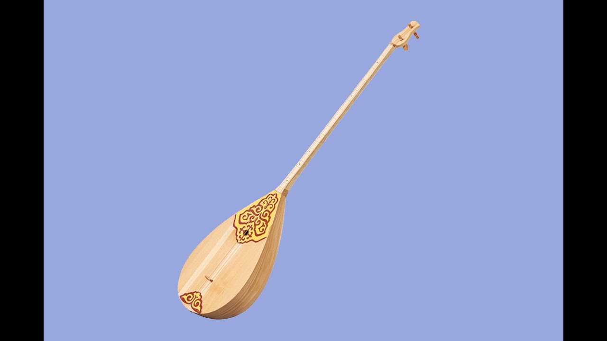
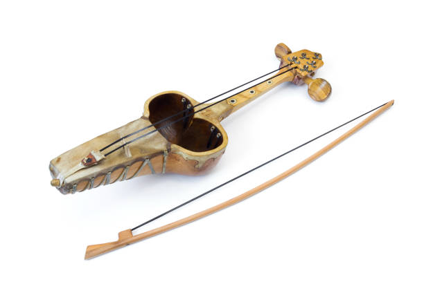
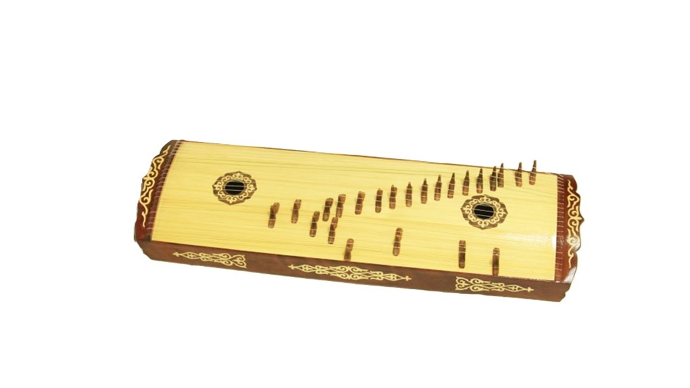
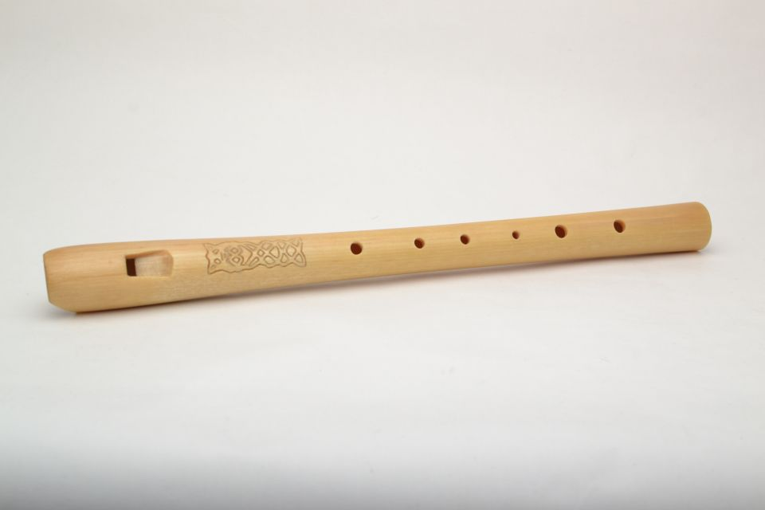
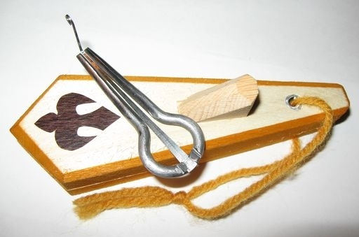
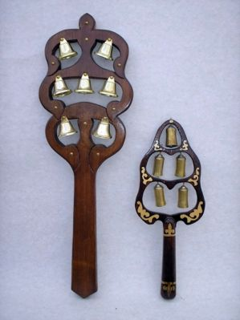
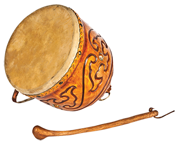
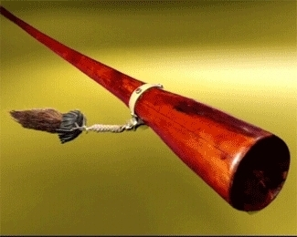
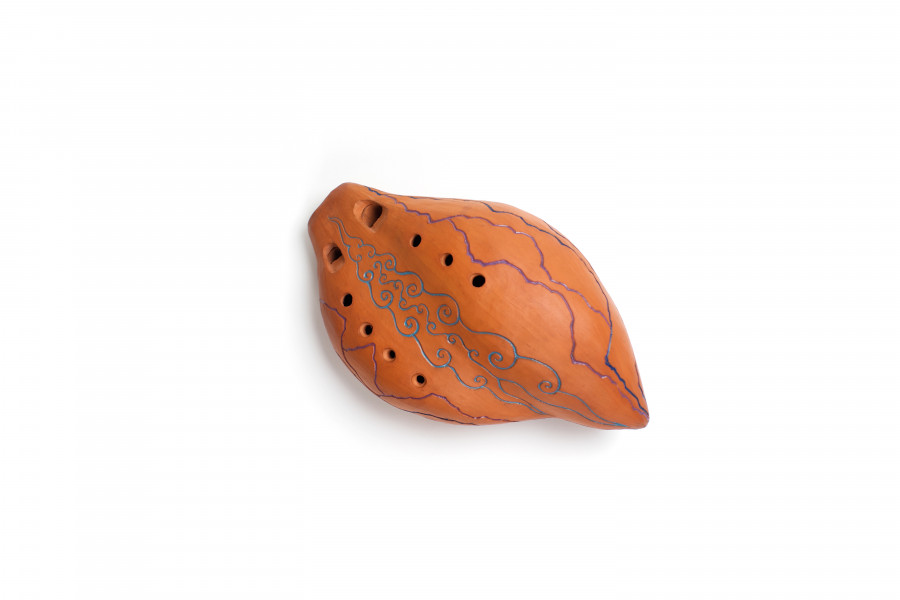

Домбыра • Қобыз • Жетіген • Сыбызғы • Шаңқобыз • Асатаяқ • Дауылпаз • Керней • Сазсырнай

Қазақ халқының ең танымал екі ішекті аспабы.

Көне қыл ішекті музыкалық аспап.

Көп ішекті шертпелі аспап.

Үрмелі халық аспабы.

Тілшелі көне музыкалық аспап.

Ұрмалы ұлттық аспап.

Қазақтың көне барабаны.

Дауысы қатты үрмелі аспап.

Саздан жасалған көне үрмелі аспап.
Выберите своё настроение и получите рекомендацию казахского кюя